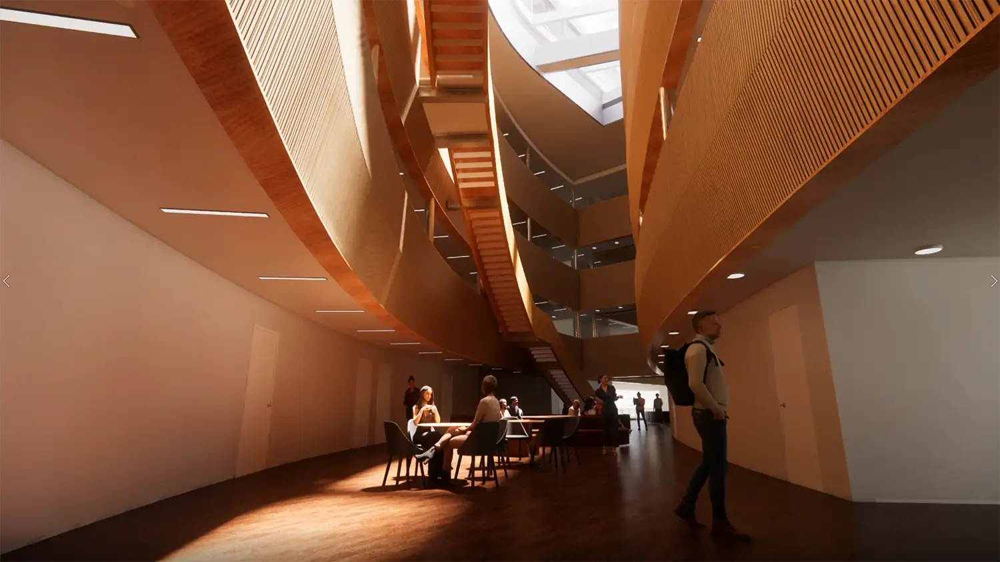
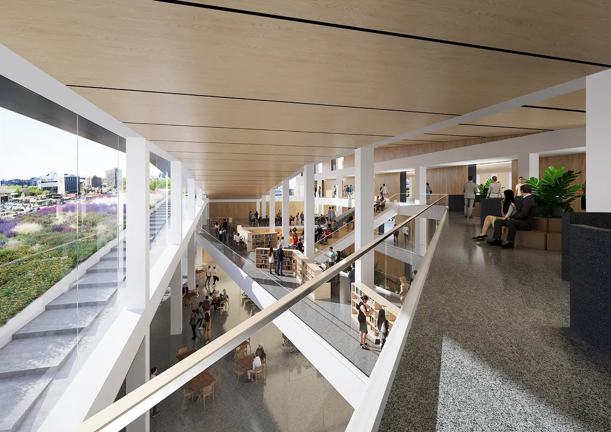
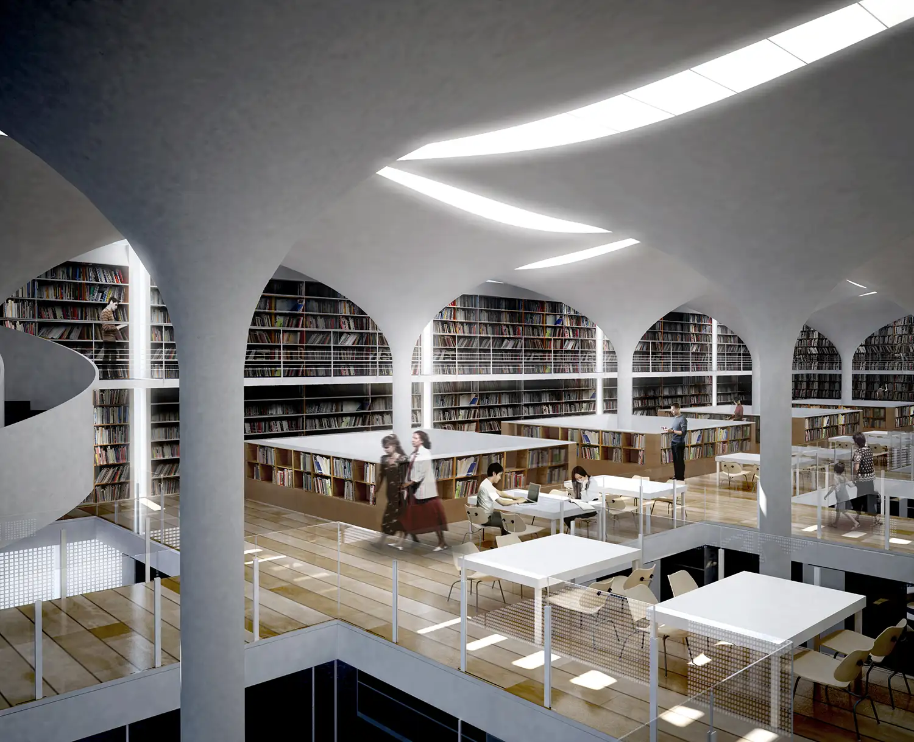

Interior Design 인테리어 설계
모듈화된 개방형 생태계 Building a Modular and Open Ecosystem
우리가 정의하는 인테리어 설계는 건축의 연장선상에서 사용자의 삶이 가장 밀도 있게 펼쳐지는 '모듈화된 개방형 생태계'의 구축입니다. 내부 공간은 고정된 틀에 머무르지 않고 변화하는 사회적 요구와 사용자의 행태에 유연하게 대응할 수 있어야 하며, 이를 통해 기능 간의 통섭과 창의적인 교류를 촉진합니다. 우리는 공간의 위계를 설정할 때 물리적인 장벽을 세우기보다, 동선의 흐름과 시각적 연결을 통한 '인지적 분리'를 지향합니다. 사용자의 이동 경로를 따라 배치된 다양한 ‘공간 장치’들은 단순한 통로를 넘어 우연한 만남과 대화가 발생하는 '건축적 산책로'가 되어 공간에 역동성을 부여합니다.
The interior design we define is the construction of a 'modular, open ecosystem' where the user’s life unfolds with the greatest density, serving as an extension of the architecture itself. Interior spaces must not remain confined within fixed frames; instead, they must respond flexibly to evolving social demands and user behaviors, thereby fostering functional consilience and creative exchange. In establishing spatial hierarchy, we strive for 'cognitive separation' through the flow of movement and visual connectivity rather than resorting to physical barriers. Diverse 'spatial devices' positioned along the user’s path transcend being mere passages, becoming 'architectural promenades' where spontaneous encounters and dialogues occur, imbuing the space with dynamism.

빛과 공기는 공간의 품질을 결정짓는 가장 근본적인 건축 재료이며, 우리는 이를 내부 공간의 서사를 이끄는 핵심 동력으로 활용합니다. 건물 중심부에 위치한 통합적인 아트리움이나 천창을 통해 자연광을 깊숙이 유도하고, 빛과 그림자가 만드는 대비를 통해 공간의 깊이감과 위계를 입체적으로 조절합니다. 고측창과 중정 등을 통해 구현된 공기의 흐름은 쾌적한 실내 환경을 유지하는 패시브 솔루션이 되는 동시에, 계절과 시간의 변화를 내부로 투영하여 사용자에게 정서적 안정과 자연의 시간성을 선사합니다. 이러한 장치들은 내외부의 경계를 흐리며, 사용자가 실내에서도 도시와 자연의 활력을 온전히 감각할 수 있는 내밀한 안식처를 완성합니다.
Light and air are the most fundamental architectural materials that dictate the quality of a space, and we utilize them as the primary drivers of the interior narrative. By drawing natural light deep into the heart of a building through integrated atriums or skylights, we three-dimensionally modulate spatial depth and hierarchy using the contrast of light and shadow. The airflow facilitated by clerestory windows and courtyards serves as a passive solution for a comfortable indoor environment while simultaneously projecting the rhythm of seasons and time into the interior, offering users emotional stability and a sense of natural temporality. These elements blur the boundaries between interior and exterior, completing an intimate sanctuary where users can fully perceive the vitality of both the city and nature from within.

재료의 진실성과 촉각적 디테일은 공간의 완성도를 결정짓는 최후의 수단입니다. 우리는 목재의 부드러운 온기와 노출 콘크리트의 견고한 물성, 혹은 빛을 산란시키는 반투명 채널 유리와 같은 다양한 팔레트의 물성을 조화롭게 배치하여 시각적 즐거움과 기능적 편의를 동시에 충족시킵니다. 인간의 스케일에 맞춘 정교한 가구 배치와 손끝에 닿는 디테일 하나까지도 전체 건축적 맥락 안에서 세밀하게 큐레이션 됩니다. 이처럼 감각의 시퀀스가 촘촘하게 설계된 공간은 사용자가 능동적으로 삶의 이야기를 써 내려갈 수 있는 최상의 배경이 될 것입니다.
The integrity of materials and tactile details are the ultimate means of defining a space's completeness. We harmoniously compose a palette of diverse material properties—such as the soft warmth of wood, the solid texture of exposed concrete, or light-scattering translucent channel glass—to satisfy both visual delight and functional convenience. Every element, from sophisticated furniture arrangements tailored to the human scale to the smallest detail at one's fingertips, is meticulously curated within the broader architectural context. A space designed with such a dense sequence of sensory experiences serves as the ideal backdrop for users to actively author the narrative of their own lives.
